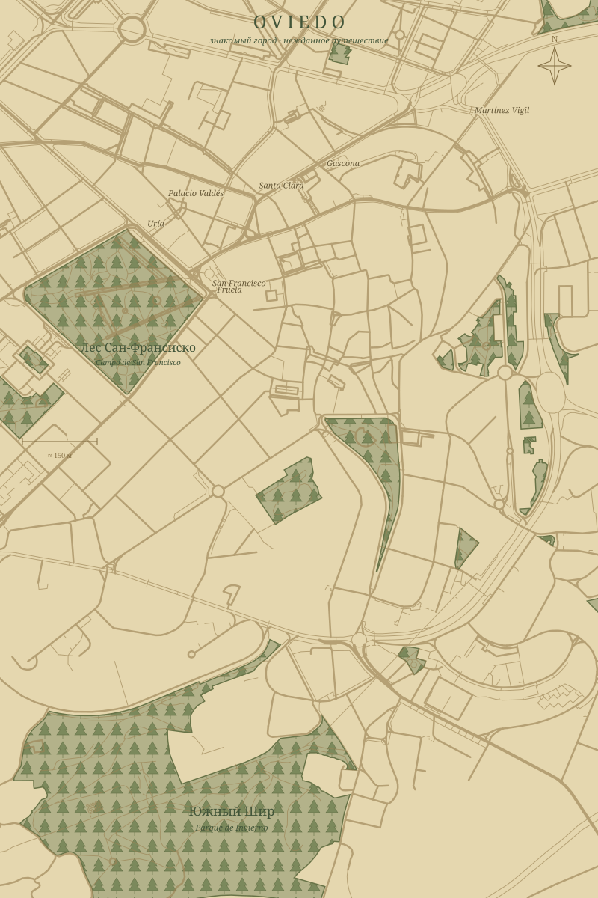

НАЙДЕНО НА ПОРОГЕ · ДО РАССВЕТА
ГЛАВА, НАПИСАННАЯ ДЛЯ ТЕБЯ
Хоббит
Нежданное
путешествие
✧
20 октября · Одна героиня и её верный спутник
✥
Одно совершенно
ВОСЕМЬ ПЕЧАТЕЙ · ОДНА УТЕРЯННАЯ СТРАНИЦА
Читай знаки.
Дорога проявится.
КАРТА СТРАННИКА✥

Пунктир — нить истории, не пешеходный маршрут.
© OpenStreetMap contributors · ODbL
ТО, ЧТО УДАЛОСЬ УБЕРЕЧЬ
Слова с утраченной страницы
ВОСЬМАЯ ПЕЧАТЬ СНЯТА
✧⌂ ┄┄┄ ✧ ┄┄┄ ?
Продолжение следует. Вместе.